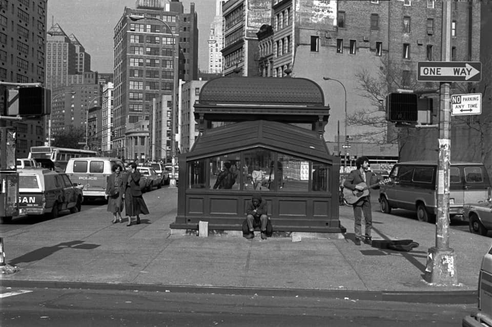
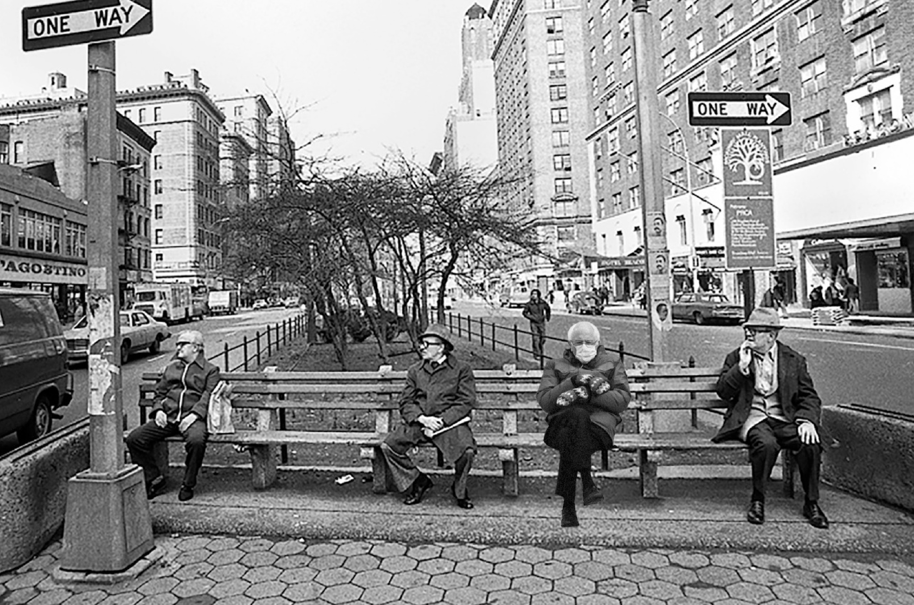
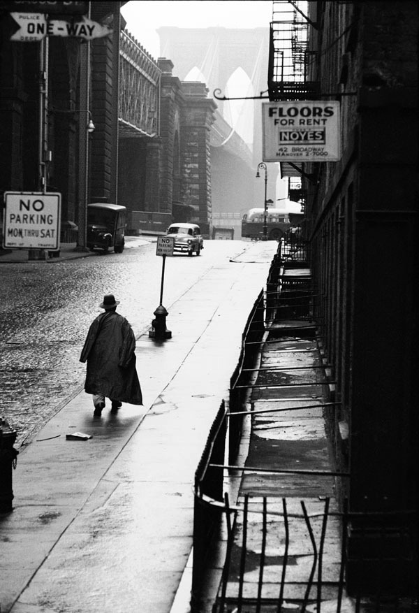
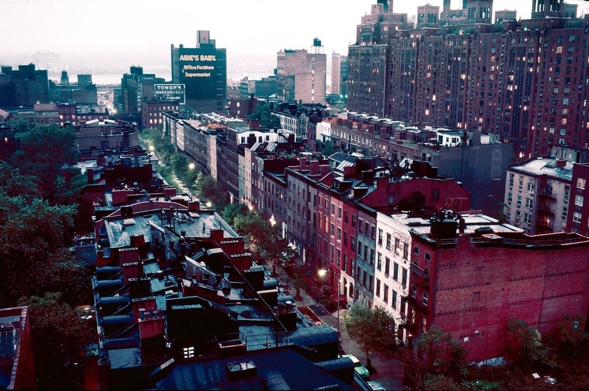
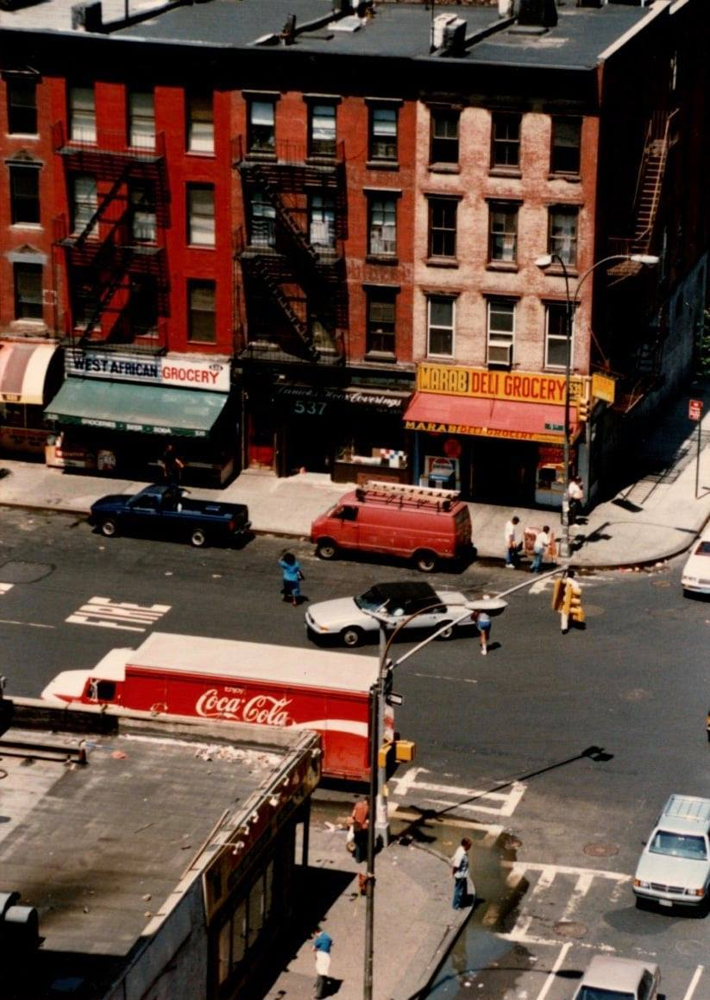

Jamel Shabazz

Waverly Diner, 1977
Jamel Shabazz
Waverly Diner, 1977

Astor Place, 1988
Do u have a fave nyc photographer? Historical or present day?
Not really. Anything that shows off the gritty reality of the City in the 70s is great in my book!
Lingerie shop window on Orchard Street, Lower East Side, New York City, 1957
Inge Morath
19590400S-b16 Riverside Drive New York Apr 1959 by Dick Leonhardt on Flickr.

E. 76th st. NYC Always at The Carlyle
David Bowie.

Bernie

The west side of Broadway, between 88th and 89th, 1962

Under the Brooklyn Bridge, New York City, Photo by Erich Hartmann, 1955
I'm trying to remember the name of an arthouse movie theater near Lincoln Center that was there in the late 80's. It was possibly located on Broadway near W 67th Street (around there). It's not Lincoln Plaza Cinemas. I remember seeing the film, Shoah, at this theatre. It may have had only one or two screens. Do you recall the name of this theater?
The Regency? http://cinematreasures.org/theaters/1199

59th and 3rd, 1983

22nd Street, between 9th and 10th Aves, 1983

Walt Frazier

Some sharply dressed kids in Harlem, 1970.
Privacy shield on the subway, 1980s

9th Avenue, Hell’s Kitchen, 1986

1979, 6th Avenue, midtown